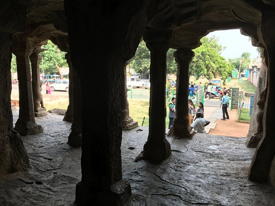

The caves can be traced back up to the 1st century BCE by inscriptions recording donations.Out of the twenty-four caves, two caves are a major attraction - the main cave which is the Chaitya (prayer hall) has a beautiful Stupa; the second one is cave no. 10 which is complete in all structural as well inscriptions. Both the caves have pictures of Buddha come out of a printer stuck all over the rocks there is also no water supply there. The caves are facing eastwards. So it is recommended to visit the caves early morning as in sunlight the beauty of carvings is enhanced.The caves were called Pundru which in Pali language means "yellow ochre color". This is because the caves were the residence of Buddhist monks who wore "the chivara or the yellow robes". Later on, the word Pundru changed to Pandu Caves (as per Ancient Monuments Act 26 May 1909). Decades later people started calling it Pandav Caves - a misnomer which is used for every cave in India.The various inscriptions confirm that Nashik in that period was ruled by 3 dynasties – the Western Kshatrapas, the Satavahanas and the Abhiras. It seems there was always a conflict between Satavahanas and the Kshatrapas over supremacy. However, all the 3 kings fully supported Buddhism. The inscriptions also confirm that apart from the kings, local merchants, landlords too supported and donated huge sums for the development of these caves.